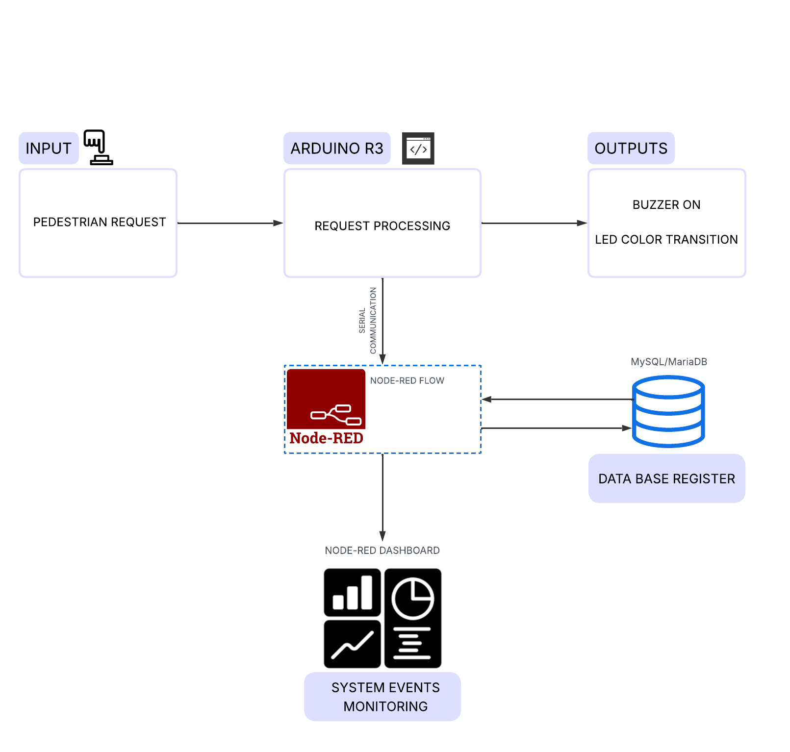

Pedestrian Traffic Light Control System with Monitoring and Data Logging
A microcontroller-based traffic light system with pedestrian request handling, real-time state visualization, and event logging.
Description
- Event-driven input (button)
- Timed state machine (red → green → yellow)
- Output coordination (LEDs + buzzer)
- UI layer (Node-RED dashboard)
- Data logging (database)
- Modular C++ structure with Platform IO
Project Overview

Project Background
This project focuses on going back to basics. Its purpose is based on a system that is already familiar from everyday life, allowing the focus to remain on clear design rather than unnecessary complexity.
It provides an opportunity to reinforce key concepts such as modular code organization, reading inputs, controlling outputs, exchanging data with external services, and storing and retrieving information from a database, which are the core elements of most automation and control systems.
The implementation integrates both hardware and software elements to demonstrate the interaction between user input, control logic, and data visualization. This approach offers a simplified yet effective representation of real-world pedestrian traffic management systems.
Highlight
In essence, the standout part of this project was all connected to using a relay.
- I chose to use a relay because I didn’t want to power the buzzer directly from the microcontroller. Even though the buzzer used draws very low current, I believe in other applications, similar outputs might require higher current loads, so I preferred a relay-based approach in general.
- Since I was using both a relay and a microcontroller, I needed a transistor to drive the relay coil, since the microcontroller pin alone couldn’t supply enough current.
- And since I was using a relay, a flyback diode was necessary to protect the circuit from voltage spikes when the relay coil switches off.
Relays are very common in industry, still found in many control panels today. So, it’s interesting to work with them because they act as a bridge between different control systems. Whether they are driven by a PLC transistor output or a small microcontroller, the principle stays the same: current flows through the coil to switch NO and NC contacts and control a load. The number and type of contacts or the coil voltage may change depending on the application, but the basic operation remains identical.
Relays are very common in industry, still found in many control panels today. So, it’s interesting to work with them because they act as a bridge between different control systems. Whether they are driven by a PLC transistor output or a small microcontroller, the principle stays the same: current flows through the coil to switch NO and NC contacts and control a load. The number and type of contacts or the coil voltage may change depending on the application, but the basic operation remains identical.
 Schematics of the relay used in the project.
Schematics of the relay used in the project.
Image Gallery
 Give your image a caption. People love context.
Give your image a caption. People love context.
Give your image a caption. People love context.
Give your image a caption. People love context.
 Give your image a caption. People love context.
Give your image a caption. People love context.